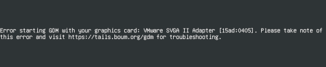

- For other hardware compatibility issues, refer to our known issues.
- Error starting GDM
- AMD Radeon HD
- AMD Radeon R5
- AMD Radeon R9
- AMD Radeon RX 400 family
- AMD Radeon RX Vega family
- AMD Renoir family
- AMD Radeon RX 5000 family
- Intel
- Intel 855GM
- Nvidia NV50 family (Tesla)
- Nvidia NVE0 family (Kepler)
- Nvidia NV110 family (Maxwell)
- Nvidia NV130 family (Pascal)
- Nvidia NV160 family (Turing)
- Nvidia RTX 30X0 family (Ampere)
- Other issues
Error starting GDM
This section applies if you see the following error message when starting Tails:
Error starting GDM with your graphics card: name of your graphics card [id] (rev number). Please take note of this error and visit https://tails.boum.org/gdm for troubleshooting.

Identify the name, ID, and revision number (if any) of your graphics card.
For example, if your error message starts with:
Error starting GDM with your graphics card: NVIDIA Corporation [10de:0a6c] GT218M [NVS 3100M] (rev a2)
- The name is NVIDIA Corporation GT218M [NVS 3100M].
- The ID is [10de:0a6c]. The ID is unique to the model of your graphics card, it is not unique to your computer.
- The revision number is a2. Your graphics card might have no revision number.
Check if your graphics card is listed below. For example, you can search for its name or ID on this page.
If your graphics card is listed, check if a workaround is documented to make it work on Tails.
If the workaround doesn't work, we are sorry that Tails does not work well on this computer. Our best hope is that a future update of Linux drivers will solve the problem.
If your graphics card is not listed, please contact our support team by email.
Mention in your email:
- The version of Tails that you are trying to start.
- The name, ID, and revision number (if any) of your graphics card.
You can send us a photo of the error message as it appears on your screen.
If your problem gets fixed in a future version of Tails, please let us know so we can update this page.
AMD Radeon HD
Affected graphics cards
| Name | ID | Revision number |
|---|---|---|
| Advanced Micro Devices, Inc. [AMD/ATI] Mars XTX [Radeon HD 8790M] | [1002:6606] | |
| Advanced Micro Devices, Inc. [AMD/ATI] Mars XTX [Radeon HD 8790M] | [1002:6606] | (rev ff) |
| Advanced Micro Devices, Inc. [AMD/ATI] Turks XT [Radeon HD 6670/7670] | [1002:6758] | |
| Advanced Micro Devices, Inc. [AMD/ATI] Seymour LP [Radeon HD 6430M] | [1002:6761] | |
| Advanced Micro Devices, Inc. [AMD/ATI] Cedar [Radeon HD 5000/6000/7350/8350 Series] | [1002:68f9] | |
| Advanced Micro Devices, Inc. [AMD/ATI] Broadway PRO [Mobility Radeon HD 5850] | [1002:68a1] | |
| Advanced Micro Devices, Inc. [AMD/ATI] RV730/M96 [Mobility Radeon HD 4650/5165] | [1002:9480] | |
| Advanced Micro Devices, Inc. [AMD/ATI] RV630/M76 [Mobility Radeon HD 2600 XT/2700] | [1002:9583] | |
| Advanced Micro Devices, Inc. [AMD/ATI] Device | [1002:98e4] | (rev da) |
| Advanced Micro Devices, Inc. [AMD/ATI] Trinity [Radeon HD 7520G] | [1002:9990] | |
| Advanced Micro Devices, Inc. [AMD/ATI] Beavercreek [Radeon HD 6550D] | [1002:9640] | |
| Advanced Micro Devices, INC. [AMD/ATI] RX 6800 | [1002:73bf] |
Other graphics cards in the Radeon HD family might be affected:
- Radeon HD 2000 series
- Radeon HD 3000 series
- Radeon HD 4000 series
- Radeon HD 5000 series
- Radeon HD 6000 series
- Radeon HD 7000 series
- Radeon HD 8000 series
Workaround
Try starting Tails using the following boot options. You should try only one of these boot options per start attempt.
radeon.modeset=0xorg-driver=modesetting
If the computer has another, integrated graphics card, try configuring the computer to use that one instead of the AMD graphics card. For example, using the following boot option:
modprobe.blacklist=radeon
AMD Radeon R5
Affected graphics cards
| Name | ID | Revision number |
|---|---|---|
| Advanced Micro Devices, Inc. [AMD/ATI] Exo UL/ULT/ULP [Radeon R5 M320] |
Workaround
Adding radeon.modeset=0 xorg-driver=modesetting to the
boot options
fixes the issue.
AMD Radeon R9
Affected graphics cards
| Name | ID | Revision number |
|---|---|---|
| Advanced Micro Devices, Inc. [AMD/ATI] Hawaii PRO [Radeon R9 290/390] | [1002:67b1] |
Workaround
Adding radeon.dpm=0 to the
boot options
fixes the issue.
AMD Radeon RX 400 family
Affected graphics cards
| Name | ID | Revision number |
|---|---|---|
| Radeon RX 480 |
Workaround
Adding amdgpu.dc=0 to the
boot options
fixes the issue.
Other possibly affected graphics cards
Other graphics cards in the Radeon RX 400 series might be affected.
AMD Radeon RX Vega family
Affected graphics cards
Graphics cards in the Radeon RX Vega series, as found in some AMD Ryzen processors, might be affected.
Workaround
To start Tails successfully, add the following boot option when starting Tails:
iommu=soft
AMD Renoir family
Affected graphics cards
| Name | ID | Revision number |
|---|---|---|
| AMD/ATI Renoir | 1002:1636 |
Workaround
We don't know any workaround so far. If you find one, please tell our help desk about it.
Other possibly affected graphics cards
Graphics cards in the Renoir family, as found in some AMD Threadripper and Ryzen processors, might be affected.
AMD Radeon RX 5000 family
Affected graphics cards
| Name | ID | Revision number |
|---|---|---|
| AMD Radeon RX 5500 XT | 1002:7340 |
Workaround
We don't know any workaround so far. If you find one, please tell our help desk about it.
Other possibly affected graphics cards
Graphics cards in the Radeon RX 5000 series might be affected.
Intel
Affected graphics cards
Various Intel graphics card.
Workaround
Try starting Tails using the following boot options. You should try only one of these boot options per start attempt.
xorg-driver=intelnomodesetnomodeset xorg-driver=vesaxorg-driver=modesetting
Otherwise, try starting in the Troubleshooting Mode.
Intel 855GM
Affected graphics cards
| Name | ID | Revision number |
|---|---|---|
| Intel Corporation 82852/855GM Integrated Graphics Device | [8086:3582] | (rev 02) |
Nvidia NV50 family (Tesla)
Affected graphics cards
| Name | ID | Revision number |
|---|---|---|
| NVIDIA Corporation MCP89 (GeForce 320M) | [10de:08a0] | a2 |
Workaround
Try starting Tails using the following boot options. You should try only one of these boot options per start attempt.
nomodesetxorg-driver=modesetting
Other possibly affected graphics cards
Other graphics cards in the NV50 family (Tesla) might be affected:
| Code name | Official Name |
|---|---|
| NV50 (G80) | GeForce 8800 (GTS, GTX, Ultra) Quadro FX (4600 (SDI), 5600) |
| NV84 (G84) | GeForce 8600 (GT, GTS, M GT, M GS), 8700M GT, GeForce 9500M GS, 9650M GS Quadro FX (370, 570, 570M, 1600M, 1700), NVS 320M |
| NV86 (G86) | GeForce 8300 GS, 8400 (GS, M G, M GS, M GT), 8500 GT, GeForce 9300M G Quadro FX 360M, NVS (130M, 135M, 140M, 290) |
| NV92 (G92) | GeForce 8800 (GT, GS, GTS 512, M GTS, M GTX) GeForce 9600 GSO, 9800 (GT, GTX, GTX+, GX2, M GT, M GTX) GeForce GTS 150(M), GTS 160M, GTS 240, GTS 250, GTX (260M, 280M, 285M), GT (330, 340) Quadro FX (2800M, 3600M, 3700, 3700M, 3800M, 4700 X2), VX 200 |
| NV94 (G94) | GeForce 9600 (GSO 512, GT, S), 9700M GTS, 9800M GTS, GeForce G 110M, GT 130(M), GT 140 Quadro FX (1800, 2700M) |
| NV96 (G96) | GeForce 9400 GT, 9500 (GT, M G), 9600 (M GS, M GT), 9650M GT, 9700M GT GeForce G 102M, GT 120 Quadro FX (380, 580, 770M, 1700M) |
| NV98 (G98) | GeForce 8400 GS, GeForce 9200M GS, 9300 (GE, GS, M GS) GeForce G 100, G 105M Quadro FX (370 LP, 370M), NVS (150M, 160M, 295, 420, 450) |
| NVA0 (GT200) | GeForce GTX (260, 275, 280, 285, 295) Quadro CX, FX (3800, 4800, 5800) |
| NVA3 (GT215) | GeForce GT (240, 320, 335M), GTS (250M, 260M, 350M, 360M) Quadro FX 1800M |
| NVA5 (GT216) | GeForce GT (220, 230M, 240M, 325M, 330M), 315 Quadro 400, FX 880M, NVS 5100M |
| NVA8 (GT218) | GeForce 8400 GS, ION 2, GeForce 205, 210, G 210M, 305M, 310(M), 405 Quadro FX (380 LP, 380M), NVS (300, 2100M, 3100M) |
| NVAA (MCP77/MCP78) | GeForce 8100, 8200, 8300 mGPU / nForce 700a series, 8200M G |
| NVAC (MCP79/MCP7A) | ION, GeForce 9300, 9400 mGPU / nForce 700i series, 8200M G, 9100M, 9400M (G) |
Nvidia NVE0 family (Kepler)
Affected graphics cards
| Name | ID | Revision number |
|---|---|---|
| NVIDIA Corporation GK107 (GeForce GTX 650) | [10de:0fc6] | a1 |
| NVIDIA Corporation GK208 (Geforce GT 710B) | [10de:128b] |
Other possibly affected graphics cards
Other graphics cards in the NVE0 family (Kepler) might be affected.
Workaround
We don't know any workaround for these graphics cards yet. Please let us know if you find one.
Nvidia NV110 family (Maxwell)
Affected graphics cards
| Name | ID | Revision number |
|---|---|---|
| NVIDIA Corporation GM107 [GeForce GTX 750 Ti] | ? | a2 |
| NVIDIA Corporation GM204 [GeForce GTX 970] | [10de:13c2] | |
| NVIDIA Corporation GM204M [GeForce GTX 970M] | [10de:13d8] | |
| NVIDIA Corporation GM204M [GeForce GTX 970M] | [10de:1618] |
Workaround
This problem has been fixed for some of these graphic cards.
Otherwise, try starting Tails using the following boot options. You should try only one of these boot options per start attempt.
nouveau.noaccel=1nouveau.modeset=0xorg-driver=modesetting
Other possibly affected graphics cards
Other graphics cards in the NV110 family (Maxwell) might be affected:
| Code name | Official Name |
|---|---|
| NV117 (GM107) | GeForce GTX (745, 750, 840M, 845M, 850M, 860M, 950M, 960M) Quadro K620, K1200, K2200, M1000M, M1200M; GRID M30, M40 |
| NV118 (GM108) | GeForce 830M, 840M, 930M, 940M[X] |
| NV120 (GM200) | GeForce GTX Titan X |
| NV124 (GM204) | GeForce GTX (980) |
| NV126 (GM206) | GeForce GTX (950, 960) |
| NV12B (GM20B) | Tegra X1 |
Nvidia NV130 family (Pascal)
Possibly affected graphics cards
Graphics cards in the NV130 family (Pascal) might be affected:
| Code name | Official Name |
|---|---|
| NV132 (GP102) | NVIDIA Titan (X, Xp), GeForce GTX 1080 Ti |
| NV134 (GP104) | GeForce GTX (1070, 1080) |
| NV136 (GP106) | GeForce GTX 1060 |
| NV137 (GP107) | GeForce GTX (1050, 1050 Ti) |
| NV138 (GP108) | GeForce GT 1030 |
Workaround
This problem has been fixed for some of these graphic cards.
Otherwise, try starting Tails using the following boot options. You should try only one of these boot options per start attempt.
nouveau.noaccel=0nouveau.noaccel=1nouveau.modeset=0xorg-driver=modesetting
Nvidia NV160 family (Turing)
As of 2020-03-19, much of these Nvidia graphics cards are not supported by Tails yet.
Affected graphics cards
| Code name | Official Name | |||||
|---|---|---|---|---|---|---|
| NV167 (TU117) | GeForce GTX 1650 | GeForce RTX 2060 Mobile | GeForce RTX 2070 | GeForce RTX 2070 Super | GeForce RTX 2070m | GeForce RTX 2080 Super |
Possibly affected graphics cards
Graphics cards in the NV160 family (Turing) might be affected.
Workaround
Try starting Tails using the following boot options. You should try only one of these boot options per start attempt.
nouveau.noaccel=1nouveau.modeset=0xorg-driver=modesetting
Nvidia RTX 30X0 family (Ampere)
As of 2020-11-07, these Nvidia graphics cards are not supported out of the box by Tails yet.
Affected graphics cards
Graphics cards in the Ampere family are affected.
Workaround
Try starting Tails using the following boot options. You should try only one of these boot options per start attempt.
nouveau.modeset=0nomodeset
Other issues
Black screen with switchable graphics computers
Some computers with switchable graphics (such as Optimus) fail to choose a video card and end up on a black screen. This has been reported for MacBook Pro 6,2, MacBook Pro 10,1 Retina, MacBook Pro 15-inch (early 2011) and might affect many others.
There are several possible workarounds for this issue:
Explicitly select one of the two graphics adapters in the BIOS instead of letting the system choose one automatically. If this does not solve the problem, try selecting the other graphics adapter.
For the Mac computers, it is possible to use a third-party application, http://gfx.io/, to force integrated graphics only through macOS. Then restart in that special mode that works with Tails.
Expert Linux users can also do the following:
Add the
i915.modeset=0 rootpw=passoption in the Boot Loader.Create a file
/etc/X11/xorg.conf.d/switchable.confwith the following content:Section "Device" Identifier "Device0" Driver "nouveau" BusID "1:0:0" EndSectionRestart X with the command:
service gdm3 restartAfter the GNOME session has started, change again the root password with the command:
sudo passwd
For more details, see our issue on Video is broken with switchable graphics.
Cannot start GNOME session with switchable graphics computers
On some computers with switchable graphics, Tails 2.10 and later fails to start the GNOME session and keeps returning to the Welcome Screen.
Try starting Tails using the following boot options. You should try only one of these boot options per start attempt.
modprobe.blacklist=nouveauxorg-driver=modesetting
Intel GM965/GL960
Affected graphics cards
| Name | ID | Revision number |
|---|---|---|
| Intel Corporation Mobile GM965/GL960 Integrated Graphics Controller (primary) | [8086:2a02] | |
| Intel Corporation Mobile GM965/GL960 Integrated Graphics Controller (secondar) | [8086:2a03] |
The laptop crashes while running Tails.
Workaround
Adding video=SVIDEO-1:d to the
boot options fixes the issue.
Virtual machines with virt-manager, libvirt and QEMU
See the dedicated troubleshooting documentation about graphics issues in Tails running inside a virtual machine with virt-manager.
Virtual machines with VMware
To improve support of Tails running inside a virtual machine with
VMware, install the
open-vm-tools-desktop software package in Tails.
Probing EDD error
Use these instructions if Tails failed to start and displayed the following error:
For the guide's "Modify the boot options as needed" step, type
edd=offto add this option to the command line.